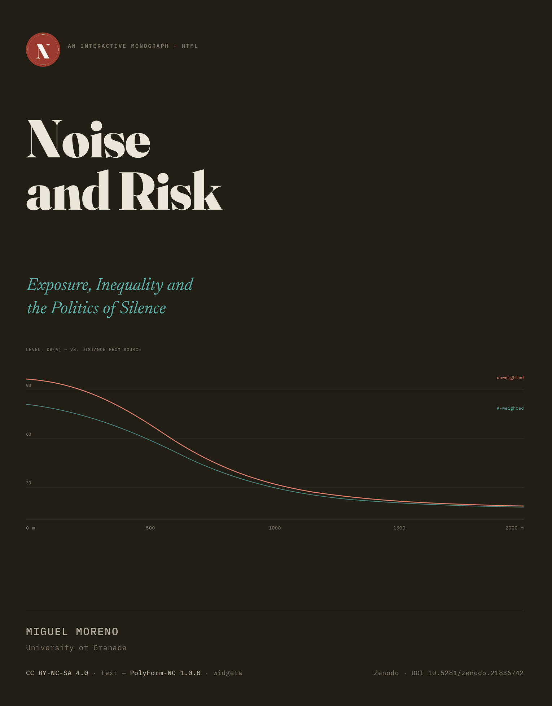
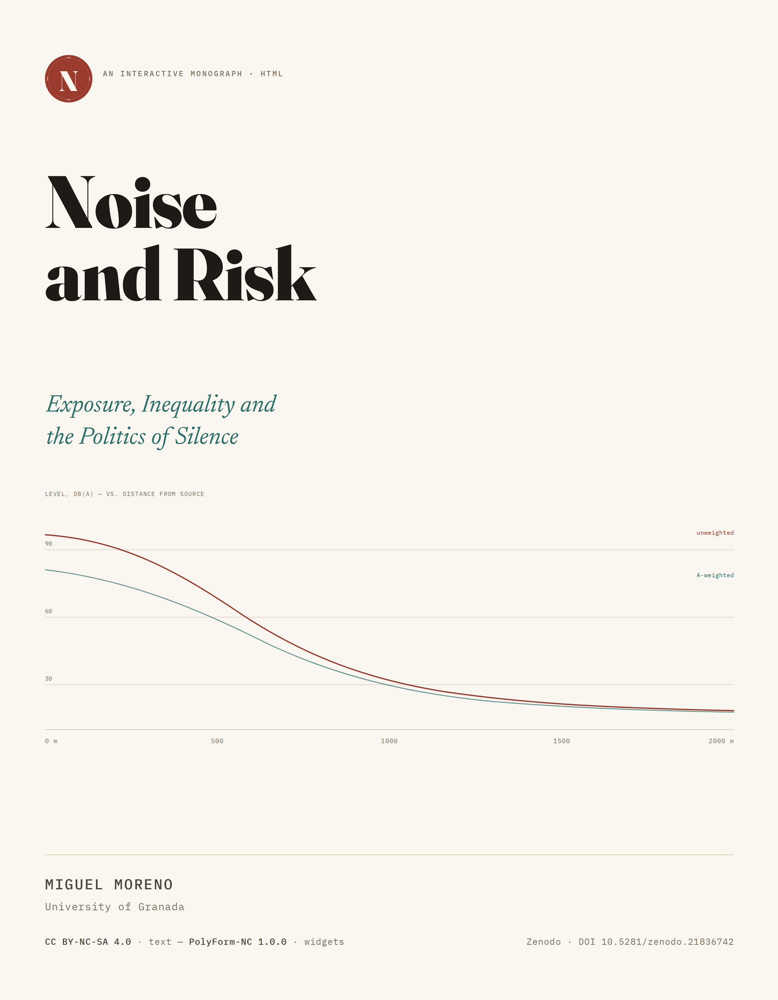

Appendix: methods, data and tools
Data and figure provenance
Every figure in this book is generated from a documented source. The workflow is consistent across chapters: source data (typically CSV) is downloaded with its access date recorded, cleaned in R using a tidyverse pipeline, and exported as flat JSON that the chapter’s widget consumes. Cleaning scripts live in R/; raw inputs in data/raw/ (with access dates), cleaned intermediates in data/clean/, and the widget-facing JSON in data/json/. No figure appears without a cited source and access date; where a value is estimated or extrapolated beyond the range in which it was measured, the figure marks this rather than presenting it as a point measurement.
The table gives, for each chapter’s principal figure or simulator, the primary source behind it and the date it was accessed; it is not a re-listing of every citation in the chapter’s prose, which belongs to references.bib. Licence terms and the specific cleaning script for each source are indexed separately in the author’s local R/ working tree and are not reproduced here pending a full licence audit ahead of any public release.
| Ch. | Primary data source(s) behind the figure/widget | Accessed |
|---|---|---|
| 1 | Perceptual-attribute and circumplex framework, ISO/TS 12913-2:2018 and -3:2019 (International Organization for Standardization, 2018, 2019) | 2026-07-11 |
| 2 | A-weighting curve, IEC 61672-1:2013 Annex E (International Electrotechnical Commission, 2013); equal-loudness basis, ISO 226:2023 (International Organization for Standardization, 2023) | 2026-07-11 |
| 3 | Exposure–response function: Kempen et al. (2018) (ischaemic heart disease); Münzel et al. (2024) (pooled all-cardiovascular) | 2026-07-11 |
| 4 | Propagation, ISO 9613-2:1996; reporting bands and 55 dB floor, Directive 2002/49/EC (European Parliament and Council of the European Union, 2002); CNOSSOS-EU common method (Kephalopoulos et al., 2014) | 2026-07-13 |
| 5 | European Environment Agency, Environmental noise in Europe 2025 (2022 reporting round) (European Environment Agency, 2025) | 2026-07-13 |
| 6 | Modulation phenomenology and audible depth, Hansen & Hansen (2020); peak-to-trough depth definition, IOA reference method (Institute of Acoustics, 2016) | not stated — see note |
| 6 | Traffic emission, CNOSSOS-EU cat. 1 as amended (European Commission, 2021; Kephalopoulos et al., 2014); AVAS minima (United Nations Economic Commission for Europe, 2017); EV treatment, Pallas et al. (2016); heat-pump thresholds (The MCS Service Company, 2025); wind-turbine guideline, WHO 2018 (World Health Organization Regional Office for Europe, 2018) | 2026-07-15 |
| 7 | Propagation, ISO 9613-1/-2 (International Organization for Standardization, 1993, 1996); A-weighting, IEC 61672-1 (International Electrotechnical Commission, 2013); property-line levels, Joint Legislative Audit and Review Commission (2024) | 2026-07-21 |
| 8 | STI method, IEC 60268-16 (International Electrotechnical Commission, 2020); classroom targets, ANSI/ASA S12.60 (Acoustical Society of America, 2010) | 2026-07-30 |
| 9 | District household income (Ajuntament de Barcelona, Oficina Municipal de Dades, 2019); district \(L_\text{den}\) exposure (Ajuntament de Barcelona, 2022); boundaries, CartoBCN (Ajuntament de Barcelona) | 2026-07-30 |
| 10 | Exposure–response functions, WHO 2018 (World Health Organization Regional Office for Europe, 2018); disability weights, WHO 2011 (World Health Organization Regional Office for Europe, 2011); monetary values, EEA 2025 (European Environment Agency, 2025); property depreciation, Nelson (2004) | 2026-07-31 |
| 11 | Guideline values, WHO 2018 (World Health Organization Regional Office for Europe, 2018); mapping and non-binding status, END (European Parliament and Council of the European Union, 2002) and EEA 2025 (European Environment Agency, 2025); binding limits and correction terms, RD 1367/2007 (BOE, 2007) | 2026-08-01 |
| 12 | Predictive pleasantness model, Mitchell et al. (2021); masker-level trade-off and type ordering, De Coensel et al. (2011); ISO 12913-3 pleasantness scale (International Organization for Standardization, 2019); augmentation field results, Lam et al. (2024) | 2026-08-01 |
The interactive layer
Each simulator is a self-contained HTML file (CSS and JavaScript inline) inserted by iframe, so that any chapter’s interactive can be opened, audited or reused independently. Every simulator computes on the parameter the reader enters; none is a fixed animation. Where a simulator embodies a statistical model (for example, the exposure-response function in Chapter 3), the model, its reference category and its confidence interval are stated in the widget and its source line, and the range of valid extrapolation is marked.
The fifteen simulators, by chapter, are listed below with the parameter the reader sets and the quantity the widget returns.
| Ch. | Widget | Parameter set by the reader → what is returned |
|---|---|---|
| 1 | ch01-soundscape-axes |
A recorded sound selected or described → its position on the ISO 12913 pleasant–eventful circumplex |
| 2 | ch02-spectrum-comparator |
Tone frequency and level → the same tone’s dB and dB(A) reading side by side, showing a low-frequency tone attenuate toward inaudibility under A-weighting |
| 3 | ch03-risk-calculator |
Exposure level (\(L_\text{den}\), dB) → relative risk of ischaemic heart disease, read off the pooled exposure–response function |
| 4 | ch04-map-model |
Source type and distance from façade → modelled façade level, and whether it falls above or below the Directive’s 55 dB reporting floor |
| 5 | ch05-scale-europe-2022 |
Transport mode selected → population exposed above WHO/END thresholds, EEA 2022 reporting round |
| 5 | ch05-annoyance-by-mode |
Transport mode and exposure level → percentage highly annoyed |
| 6 | ch06-netzero-soundscape |
Mix of EV/AVAS, heat-pump and small-wind sources assembled by the reader → composite soundscape profile against the combustion-era baseline |
| 6 | ch06-amplitude-modulation |
Amplitude-modulation depth of a synthetic wind-turbine-like tone, held at a fixed Leq → auralised sound, modulated vs steady, so the reader hears what an identical average level conceals |
| 7 | ch07-hum-attenuation |
Distance from a tonal source, with the tonal penalty applied or not → attenuated level at the property line |
| 8 | ch08-classroom-intelligibility |
Background level, reverberation time and speech-to-noise ratio → Speech Transmission Index (STI) |
| 9 | ch09-exposure-income |
Noise-level threshold chosen by the reader → household income plotted against exposure share, by Barcelona district |
| 9 | ch09-injustice-axes |
A source or scenario selected → its position on the distributive/procedural two-axis framework |
| 10 | ch10-cost-calculator |
Population exposed and a decibel reduction → monetised annual cost or abatement benefit |
| 11 | ch11-policy-comparator |
Source type selected (road, night flight, nightlife terrace, heat pump, data-centre hum, wind turbine) → compliance status under each of three regimes, plus a fourth column scored on perceived character rather than averaged level |
| 12 | ch12-augmentation-demo |
Traffic drone level, masker type and masker level → estimated ISO soundscape pleasantness |
Each computes on the parameter entered.
Reproducibility
This work is a Quarto project rendered to HTML only. execute: freeze is set so that computed outputs are cached and the rendered book is stable between builds. The reference list is managed in a single references.bib, formatted to APA 7th edition, with a DOI recorded for every source that has one.
AI and tools used
This is not a short paper reporting a single study, nor a protocol-bound summary of one research programme’s results. It is a book-length, three-part diagnosis of a multidimensional problem — acoustic and epidemiological on one axis, economic and distributive on a second, epistemic and regulatory on a third — built across twelve chapters, fifteen self-contained interactive simulators and a reference list of some 110 sources spanning international standards (ISO, IEC, ANSI/ASA), World Health Organization guidance, European Union directives and their common assessment methods, national law and its regional and municipal transpositions, and case law from domestic and European courts. The aim throughout has been to hold in one frame material that more conventional treatments leave scattered across separate literatures — an acoustician’s standard, an epidemiologist’s exposure–response function, an economist’s hedonic valuation, a legal scholar’s directive, a sociologist’s account of who gets heard — and to do so without letting any one of those registers soften into the others. That aim, and the sustained editorial work of pursuing it across some 35,600 words of manuscript prose — front matter, twelve chapters and back matter together — before counting the verification trail behind each of the 110 references and the code and documentation behind fifteen working simulators, is the measure of what this declaration describes.
AI assistance was used across the project’s phases, and every phase remained under the author’s direction and final judgement. Concretely: in proposing chapter and section architecture, subject to the author’s confirmation or revision before any prose was built on it; in researching and verifying empirical anchors against primary sources — standards bodies, peer-reviewed journals, official statistical and regulatory publications, court records — before, not after, a claim entered the text; in drafting prose to the author’s specification of register, structure and emphasis, redrafted iteratively against the author’s own edits; in constructing the interactive simulators, including the computational model behind each one, with the underlying arithmetic independently checked (in R, Python or Node.js as the chapter required) before it was written into a widget; and in formatting citations and assembling references.bib entries for the author’s review.
The safeguard governing all of this was verification-first, applied without exception. No digital object identifier or URL was ever inferred to close a gap; where a source could not be verified, the claim it would have supported waited rather than entering the text provisionally, and pending items were held visibly — as a commented placeholder in references.bib, not as a citation presented as settled — until resolved or removed. Numerical claims embedded in a simulator were checked against their stated model before publication, not merely asserted plausible. Where two published figures for the same quantity conflicted, the conflict is noted in the text rather than silently resolved in favour of the more convenient number.
None of this delegates the intellectual work. The argument of each chapter, the decision of which nuance to preserve against the pull of a tidier slogan — the Barcelona inversion kept as a genuine finding rather than smoothed into the expected pattern is the clearest instance — the judgement of what belongs in a widget’s readout and what would clutter it, and the final text in every chapter, are the author’s. AI assistance accelerated each of those steps where it could add real advantage, but it did not make the judgement of what to keep, cut or say instead.
How to cite this work
This work exists in two forms that serve different purposes, and citation should point to the one built for that purpose. The interactive text — where the argument and its fifteen simulators actually run — is deployed identically to a small number of mirrored addresses, kept in sync so that no one of them is more authoritative than the others as a place to read the work. For citation, a separate and fixed record is kept on Zenodo, a CERN-backed open-access archive that assigns each release a persistent DOI and preserves a permanent snapshot independent of any single host remaining online. The DOI, not any of the addresses below, is the correct target for scholarly citation.
Suggested citation (APA 7th)
Moreno, Miguel (2026). Noise and Risk: Exposure, inequality and the politics of silence (Version 1.0) [Interactive HTML monograph]. Zenodo. https://doi.org/10.5281/zenodo.21836742
BibTeX
@misc{moreno2026noise,
author = {Moreno, Miguel},
title = {Noise and Risk: Exposure, Inequality and the Politics of Silence},
year = {2026},
note = {Version 1.0},
publisher = {Zenodo},
doi = {10.5281/zenodo.21836742},
url = {https://doi.org/10.5281/zenodo.21836742}
}Licence
The text is published under a Creative Commons Attribution-NonCommercial-ShareAlike 4.0 International licence (CC BY-NC-SA 4.0) — the same terms already declared, with their roundels, in the book’s own title block. In brief: reuse and adaptation are permitted with attribution, for non-commercial purposes, and under the same licence for any derivative. The full legal text is at creativecommons.org/licenses/by-nc-sa/4.0.
The interactive layer is licensed separately, since Creative Commons terms are not designed for software. All fifteen simulators listed in the table above — every self-contained HTML/CSS/JavaScript widget inserted through the chapters, without exception — are released under the PolyForm Noncommercial License 1.0.0 (SPDX identifier PolyForm-Noncommercial-1.0.0), full text at polyformproject.org/licenses/noncommercial/1.0.0. This declaration governs every widget from the date of publication, including any that does not yet carry its own header comment to that effect.
Reading copies
The rendered book is deployed identically to four addresses, and each carries the same cover shown at the close of this section. Vercel is canonical; the remainder are mirrors, kept in sync so that any one of them is a complete substitute should another become unavailable.
| Host | Address | Role |
|---|---|---|
| Vercel | https://noise-and-risk.vercel.app/ |
Canonical |
| GitHub Pages | https://utilizas.github.io/noise/ |
Mirror |
| Netlify | https://noise-risk.netlify.app/ |
Mirror |
| Cloudflare Pages | https://noise-and-risk.utilizas.workers.dev |
Mirror |
Cover

